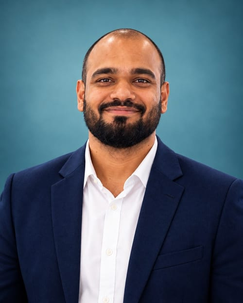

Turning battery, materials & process data into deployable AI systems.
I'm a Senior AI Research Engineer working at the intersection of machine learning, materials science, and industrial process optimization — building physics-informed models, computer vision pipelines, and predictive-maintenance systems across batteries, steelmaking, and refractories.

TAOYUAN, TWAbout
01 / SUMMARYI'm a Senior AI Research Engineer currently working in the battery industry, with a background spanning machine learning, materials science, steelmaking, and industrial process optimization. My work focuses on applying AI to battery analytics — state estimation, aging prediction, anomaly detection, predictive maintenance, and intelligent decision-support systems.
I use time-series modeling, deep learning, hybrid physics–AI approaches, and explainable machine learning to turn complex sensor and operational data into practical engineering insights, with particular interest in battery intelligence, digital twins, adaptive estimation, MLOps, and scalable AI systems that improve reliability, safety, performance, and manufacturing efficiency.
- RoleSenior AI Research Engineer
- FocusBattery intelligence, physics-informed ML, CV
- IndustriesBatteries, steelmaking, refractories
- Based inTaoyuan, Taiwan
- LanguagesEN (professional), FR (elementary), HI (native), BN (intermediate)
How I work
- Self-driven, initiative-oriented — thrive in fast-paced environments
- Take ownership and drive execution end-to-end
- Adapt fast, learn faster, grow faster
Leadership & community
- VPE, Toastmasters Club — Mons: leadership, public speaking, confidence
- Alumni President — Vel Tech Chapter: mentoring & knowledge-sharing webinars
Beyond work
- Cycling — freedom, fitness, focus
- Hiking — explore, challenge, rejuvenate
- Reading — learn, reflect, inspire
Core values
- Integrity — do the right thing
- Curiosity — always learning
- Innovation — solve with purpose
- Collaboration — stronger together
"Understand the problem deeply, build solutions practically, and improve continuously."
Experience
02 / TIMELINESkills & Toolkit
03 / STACKSelected Projects
04 / BUILDSPublications
05 / PAPERSHonors & Awards
Education & Certifications
06 / TRAININGPublic GitHub Repositories
07 / REPOSITORIESPulled live from the GitHub API — showing my public, non-fork repositories only.
Open For
08 / AVAILABILITYOutside my full-time role, I take on a limited number of freelance, volunteer, and speaking engagements — where deep grounding in applied ML, materials science, and industrial AI can genuinely move something forward. If any of the following matches what you're building, teaching, or organizing, I'd like to hear from you.
Freelance & Consulting
- Short, well-scoped ML/AI engagements
- Model development, data pipelines, or a second opinion on an existing system
- Best fit: targeted expertise, not a full-time hire
Volunteering & Mentorship
- Mentoring early-career engineers moving into applied ML
- Pro-bono support for non-profit and STEM-access initiatives
- Portfolio & direction guidance for career-switchers into AI
Technical Writing
- Deep-dive articles translating research-grade ML into implementable engineering
- Documentation, whitepapers, and case studies
- Comfortable writing for both technical and mixed audiences
Seminars, Webinars & Guest Lectures
- Guest lectures and seminars for university programs
- Webinars on applied ML, physics-informed modeling, and industrial AI
- Talks on moving into AI research from a non-CS background